"plot"(x, type = "l", col = 1:6, pch = NULL, lwd = NULL, lty = NULL, main = NULL, xlab = NULL, ylab = "Density", xlim = range(unlist(lapply(x, function(x) x$x))), ylim = c(0, max(unlist(lapply(x, function(x) x$y)))), ...)"plot"(x, type = "h", col = 1:6, pch = NULL, lwd = 2, lty = NULL, main = NULL, xlab = NULL, ylab = "Probability", xlim, ylim = c(0, max(unlist(x))), width = 0.1, ...)"plot"(x, main = NULL, xlab = NULL, ylab = "Density", ...)"plot"(x, main = NULL, xlab = NULL, ylab = "Probability", ...)"plot"(x, main = NULL, xlab = NULL, ylab = "Density", ...)"plot"(x, main = NULL, xlab = NULL, ylab = "Probability", ...)"plot"(x, main = NULL, xlab = NULL, ylab = "Density", ...)"plot"(x, main = NULL, xlab = NULL, ylab = "Probability", ...)"plot"(x, main = NULL, xlab = NULL, ylab = "Probability", ...)"plot"(x, type = "l", main = x$data.name, ...)"plot"(x, main = NULL, xlab = NULL, ...)"plot"(x, main = NULL, xlab = NULL, ...)"plot"(x, main = NULL, xlab = NULL, ...)"plot"(x, main = NULL, xlab = NULL, ylab = "Density", ...)"plot"(x, main = NULL, xlab = NULL, ...)
plot.density, plot.histogram,
plot.tableNULL
Plot methods.
#' # Compile model modelfile <- system.file('extdata', 'hmm_f.bug', package = 'Rbiips') stopifnot(nchar(modelfile) > 0) cat(readLines(modelfile), sep = '\n')var c_true[tmax], x_true[tmax], c[tmax], x[tmax], y[tmax] data { x_true[1] ~ dnorm(0, 1/5) y[1] ~ dnorm(x_true[1], exp(logtau_true)) for (t in 2:tmax) { c_true[t] ~ dcat(p) x_true[t] ~ dnorm(f(x_true[t-1], t-1), ifelse(c_true[t]==1, 1/10, 1/100)) y[t] ~ dnorm(x_true[t]/4, exp(logtau_true)) } } model { logtau ~ dunif(-3, 3) x[1] ~ dnorm(0, 1/5) y[1] ~ dnorm(x[1], exp(logtau)) for (t in 2:tmax) { c[t] ~ dcat(p) x[t] ~ dnorm(f(x[t-1], t-1), ifelse(c[t]==1, 1/10, 1/100)) y[t] ~ dnorm(x[t]/4, exp(logtau)) } }data <- list(tmax = 10, p = c(.5, .5), logtau_true = log(1), logtau = log(1)) model <- biips_model(modelfile, data, sample_data = TRUE)* Parsing model in: /home/adrien-alea/workspace/biips-git/Rbiips/inst/extdata/hmm_f.bug * Compiling data graph Declaring variables Resolving undeclared variables Allocating nodes Graph size: 94 Sampling data Reading data back into data table * Compiling model graph Declaring variables Resolving undeclared variables Allocating nodes Graph size: 105#' # SMC algorithm n_part <- 100 out_smc <- biips_smc_samples(model, c('x', 'c[2:10]'), n_part, type = 'fs', rs_thres = 0.5, rs_type = 'stratified')* Assigning node samplers * Running SMC forward sampler with 100 particles |--------------------------------------------------| 100% |**************************************************| 10 iterations in 0.04 spar(mfrow = c(2, 2)) plot(biips_density(out_smc$x, bw = 'nrd0', adjust = 1, n = 100))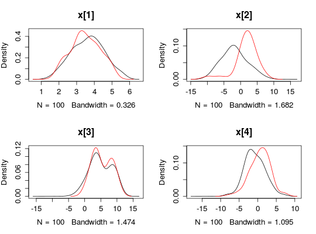
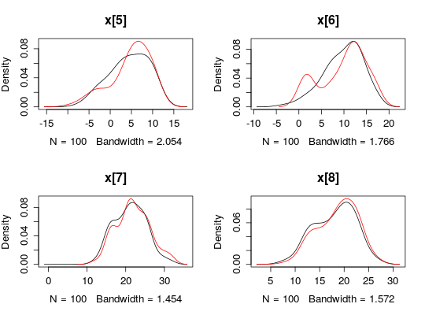
plot(biips_table(out_smc[['c[2:10]']]))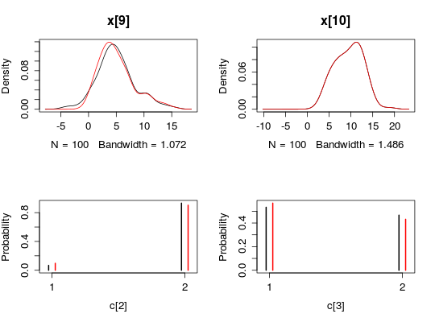
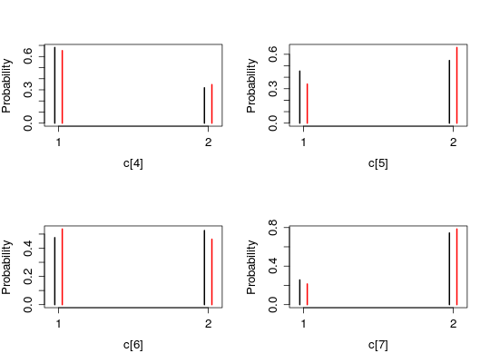
plot(biips_density(out_smc$x$f))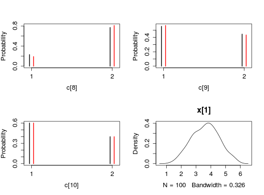
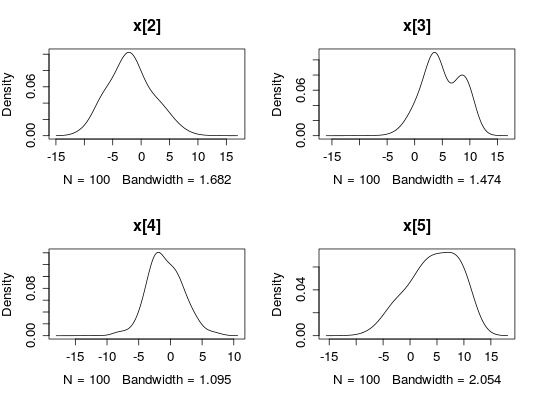
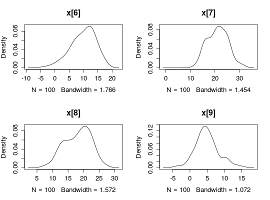
plot(biips_table(out_smc[['c[2:10]']]$f))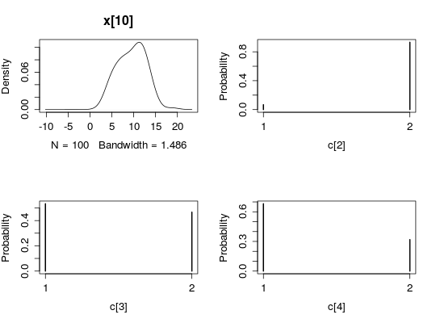
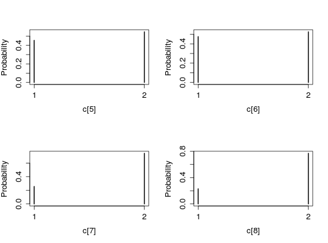
#' # PIMH algorithm n_part <- 50 obj_pimh <- biips_pimh_init(model, c('x', 'c[2:10]')) # Initialize* Initializing PIMHout_pimh_burn <- biips_pimh_update(obj_pimh, 100, n_part) # Burn-in* Updating PIMH with 50 particles |--------------------------------------------------| 100% |**************************************************| 100 iterations in 2.09 sout_pimh <- biips_pimh_samples(obj_pimh, 100, n_part) # Samples* Generating PIMH samples with 50 particles |--------------------------------------------------| 100% |**************************************************| 100 iterations in 2.08 spar(mfrow = c(2, 2))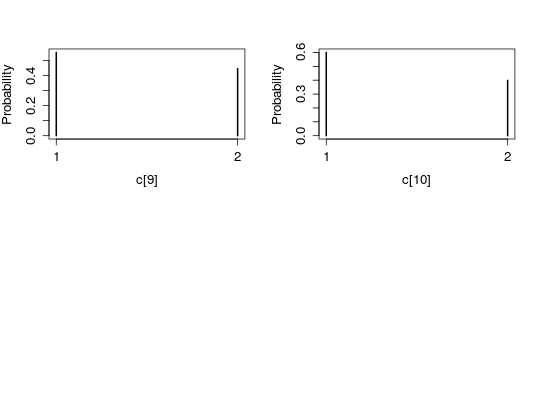
plot(biips_density(out_pimh$x))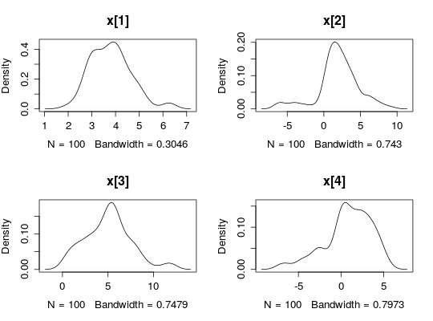
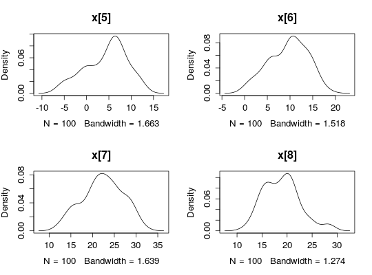
plot(biips_table(out_pimh[['c[2:10]']]))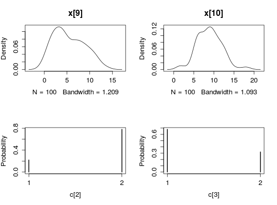
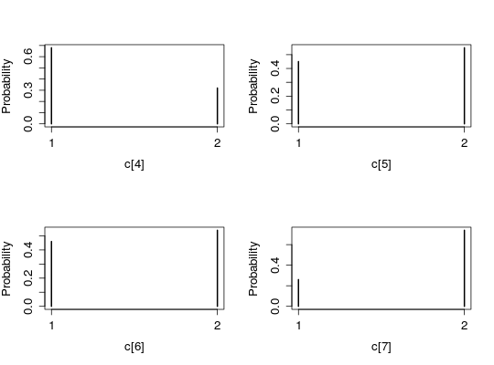
#' # PMMH algorithm data <- list(tmax = 10, p = c(.5, .5), logtau_true = log(1)) model <- biips_model(modelfile, data)* Parsing model in: /home/adrien-alea/workspace/biips-git/Rbiips/inst/extdata/hmm_f.bug * Compiling data graph Declaring variables Resolving undeclared variables Allocating nodes Graph size: 93 Sampling data Reading data back into data table * Compiling model graph Declaring variables Resolving undeclared variables Allocating nodes Graph size: 105n_part <- 50 obj_pmmh <- biips_pmmh_init(model, 'logtau', latent_names = c('x', 'c[2:10]'), inits = list(logtau = -2)) # Initialize* Initializing PMMHout_pmmh_burn <- biips_pmmh_update(obj_pmmh, 100, n_part) # Burn-in* Adapting PMMH with 50 particles |--------------------------------------------------| 100% |++++++++++++++++++++++++++++++++++++++++++++++++++| 100 iterations in 2.13 sout_pmmh <- biips_pmmh_samples(obj_pmmh, 100, n_part, thin = 1) # Samples* Generating 100 PMMH samples with 50 particles |--------------------------------------------------| 100% |**************************************************| 100 iterations in 2.11 splot(biips_density(out_pmmh$logtau))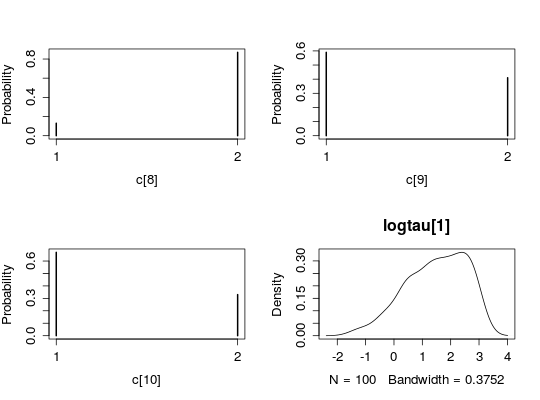
par(mfrow = c(2, 2)) plot(biips_density(out_pmmh$x))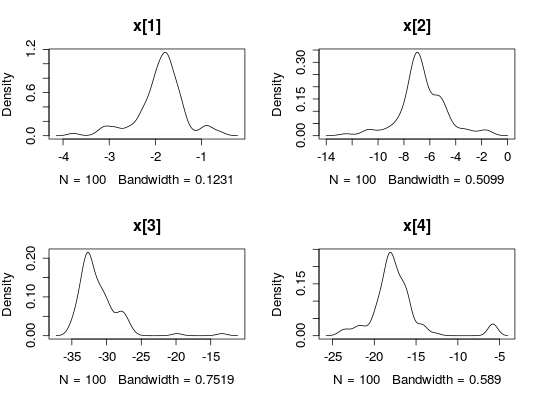
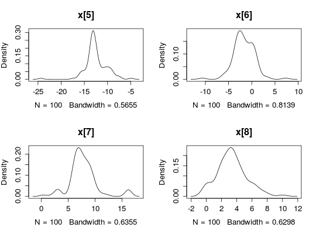
plot(biips_table(out_pmmh[['c[2:10]']]))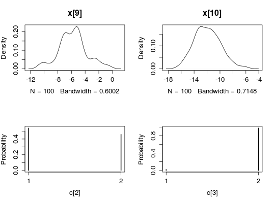
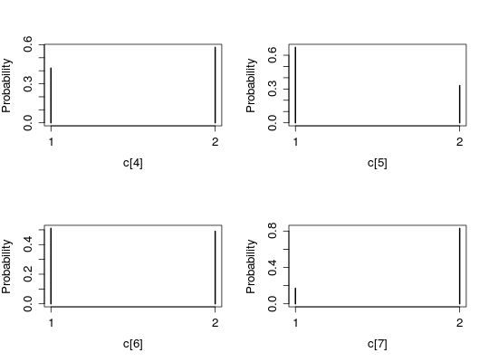
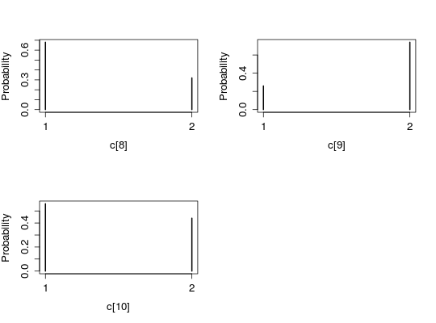